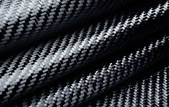

There is so much that you can do in this field. From using microbes to turn poop into a usable form of biogas to the production of chemicals. In material science and engineering you get to find and develop ways to manufacture new alloys, ceramics, and understanding the physics of chemical interactions. All of this is amazing because you are using the forces of nature to create new products and produce energy.
A fuel cell directly turns hydrogen combustion into electricity achieving 40-60% efficiency. Photo from mathworks.com

When waste becomes useful. Microbes called methanogens turn waste into methane gas to be burned and digestates used for fertilizers. Photo from epa.gov

Carbon fiber is stronger and stiffer than steel, it is lighter than steel; making it the ideal manufacturing material for many parts. Photo by DaveAlan on gettyimages.com
These big facilities make lots of chemcials and looks like a cit with many intertwined parts which is cool. Photo by weerapong from Adobe Stock
Glassware for chemistry must be tough and resistant. Withstanding temperature changes and corrosive chemicals. Glassware is made from borosilicate glass. Photo from Corning Glass Works on cen.acs.org

Metallurgy is the science of using metals for application and perfecting alloys for desired characteristics. Photo from online.missouri.edu